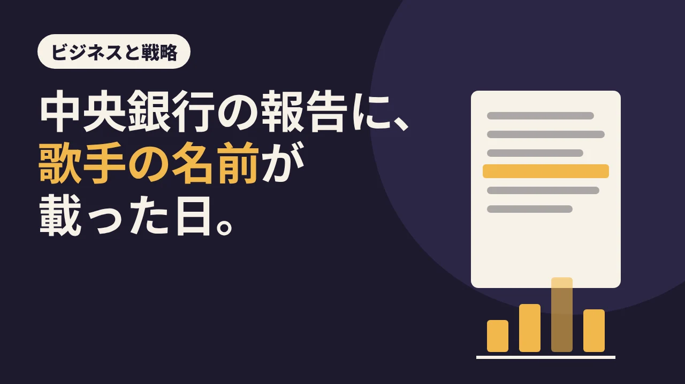

LOTUS VISUAL JOURNAL / ビジネスと戦略 #03
中央銀行の報告に、歌手の名前が載った日。
コンサートが来ると、街が変わる。ホテルが埋まり、駅が混み、飲食店に行列ができる。年末のライブシーズンを前に、よく聞く話です。
では、それはどれくらい「本当」なのでしょう。2023 年の夏、その問いに、思いがけない文書が答えました。アメリカの中央銀行にあたる連邦準備制度(FRB)が出す、景気の報告書です。
01 / STORY堅い報告書の、1 行
FRB は年に 8 回、「ベージュブック」と呼ばれる報告書を出しています。全米 12 の地区の連邦準備銀行が、地元の企業や団体などへの聞き取りをもとに、景気の様子をまとめたものです。金利を決める会合の資料にもなる、いかにも堅い文書です。
2023 年 7 月 12 日に出た号の、フィラデルフィア地区の「個人消費」の項に、こんな 1 文がありました。ある取引先によると、5 月は、パンデミックが始まってから、フィラデルフィアのホテル収入が最も好調な月だった。その大きな理由は、市内で開かれたテイラー・スウィフトのコンサートに来た宿泊客の流入だった、と。
景気の報告書に、歌手の名前が出てくる。このことは米国の報道でも大きく取り上げられ、NBC ニュースなども伝えました。
02 / MECHANISMなぜ、コンサートが景気に出るのか
仕組みは単純です。大きな公演は、チケットを買った人を、別の街から連れてきます。来た人は泊まり、食べ、移動し、ついでに買い物もします。チケット代そのものより、その周りでお金が動く。観光の世界では、こうした「その瞬間のために旅をする」ことを「ライブツーリズム」と呼ぶことがあります。
旅行業界のニュースサイト Skift の記事(トラベルボイスが日本語で紹介)は、米ライブ・ネイションの調査として、2025 年のライブ音楽の参加者の 40% が、音楽イベントのために少なくとも約 800 キロ移動したと伝えています。1 つの公演が、遠くの街の人まで動かしている、ということになります。
NBC ニュースは、同じツアーについて、公演地の自治体がホテルの売り上げの増加を発表した例も紹介しています。ただし、それぞれの数字をどう計算したかは、記事には書かれていません。
03 / TWIST同じ段落の、もう 1 行
ここで、話が少しひっくり返ります。あのベージュブックの同じ段落を読み進めると、観光の関係者は、わずかな伸びはあるものの「回復は鈍っている」と話していた、と書かれています。ビジネスの出張は戻りつつある一方、レジャーの旅行は横ばい。観光地での滞在中の支出も、最近は減っていたとされています。
つまり、あの 1 文は「コンサートで景気が良くなった」という話ではありませんでした。全体がゆるやかに鈍るなかで、ある月、ある街だけが、はっきり跳ねた。そもそもベージュブックは聞き取りをまとめた報告で、統計の推計ではありません。そこに名前が載ったのは、大きな公演が「平均」をではなく「その日・その場所」を動かす力を、誰の目にも分かる形で見せたからだと考えられます。
大きなイベントの力は、広く薄くではなく、狭く濃く現れる。だから、その「濃い日」を迎える街や会場の準備は、ふだんとは別物になります。
04 / ON SITELOTUS VISUAL の現場では
イベントの裏方にとって、この「狭く濃く」はよく知っている感覚です。大きな公演や展示会が重なる日は、会場の近くのホテルも、搬入の時間帯も、機材も人も、同じ日に取り合いになります。
たとえば、大きな催しと日程が重なりそうなときは、機材の確保や搬入時間の相談、スタッフの移動と宿泊の手配を早めに始める、といった考え方ができます。どこまで前倒しするかは、案件の規模と会場の事情に合わせて決めることです(この報告書から決まる決まりではありません)。映像機材のレンタルや技術スタッフについて、日程が見えた段階で早めにご相談いただくと、選べる幅が広がります。
05 / TAKEAWAY今日の持ち帰り
- 2023 年 7 月の FRB ベージュブックは、フィラデルフィアの 5 月のホテル収入がパンデミック以降で最も好調で、その大きな理由をスウィフトの公演の宿泊客とする取引先の声を載せた。
- 同じ段落では、観光全体の回復は鈍っていたとも書かれている。大きな公演の効果は「その日・その場所」に濃く出る。
- 大きな催しと重なる日は、機材・搬入・人の手配を早めに考えると、選べる幅が残りやすい。
関連:祝日を 1 週間ずらした大統領の話・強い工場は、すぐ止まる・映像機材のレンタル
出典:Federal Reserve Board「Beige Book」2023 年 7 月 12 日(フィラデルフィア地区・個人消費の項:5 月がパンデミック以降で最も好調なホテル収入の月、その大きな理由がスウィフトのコンサートの宿泊客という取引先の話/同じ段落の、観光の回復の鈍化・レジャー旅行の横ばい・滞在中の支出の減少/2023 年 6 月 30 日以前に集めた情報)／NBC News の報道(ベージュブックの記述の報道、公演地の自治体が発表したホテル売上の例。算出方法は記事に記載なし)／トラベルボイス「ライブツーリズム」(2026 年 1 月 6 日、Skift の記事の日本語版)(ライブ・ネイションの調査として、2025 年のライブ音楽参加者の 40% が約 800 km 以上移動)。2026 年 11 月 11 日閲覧。